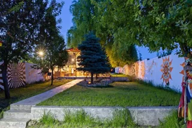
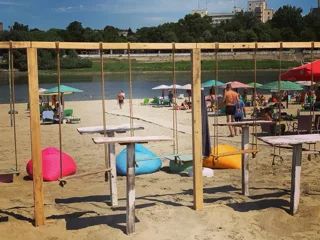
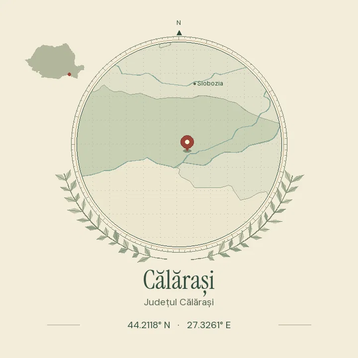
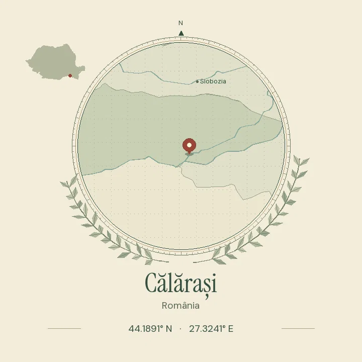
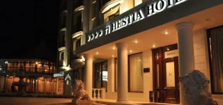

Locații de nuntă în județul Călărași
- locații în director
- 6
- cu cazare în registrul SITUR
- 1
- medie ponderată Google
- 4,2 / 5
- evaluări Google
- 3.211
Cum alegi unde mergi la vizionare
Puteți răsfoi împreună adresele din Călărași și cele din localitățile mai mici, inclusiv Fundeni. Când o proprietate vă atrage prin terenul din jur, cereți întâi permisiunea de a-l folosi exclusiv și o schiță cu zona efectiv disponibilă pentru scaune.
La Hotel Restaurant Baden, un oaspete descrie terasa de pe malul apei. Pentru o masă după cununie, mergeți până la masa cea mai îndepărtată de salon. Se vede apa de acolo? Poate ajunge un cărucior în același loc? Dacă priveliștea este principalul motiv al alegerii, notați în ofertă partea de terasă pe care operatorul este de acord să o rezerve.
Două adrese pentru o zi de vizionări
Pe hartă, între aceste două proprietăți sunt 7,3 km în linie dreaptă. Deschide indicațiile de drum din fișe ca să vezi traseul pe șosea înainte de a stabili a doua întâlnire.
- Hotel Restaurant Baden · Șoseaua Chiciului, 910005 Călărași
- La Salcii · Soseaua Chiciului Nr. 1, Km. 2, 999999
Explorează după localitate
Toate locațiile din județul Călărași
Ordinea ține cont de nota Google și de numărul evaluărilor. Cum calculăm ordinea

Fotografie a locației · Sursa fotografiei Fundeni · Local pentru evenimente
Magic Garden Grădină Urbană
La o aniversare ținută la Magic Garden, aproape patruzeci de oameni au încăput la masă pe terasă, potrivit familiei care a rezervat.
Nicolae Grigorescu 14, 917110 Fundeni+40 722 615 811
Fotografie a locației · Sursa fotografiei Călărași · Stațiune
Samskara Beach
Căsuțele de la Samskara Beach și nisipul fin sunt cele două lucruri pe care le reține un oaspete din sejurul său.
910000 Călărași+40 739 555 335
Hartă ilustrată Călărași · Local pentru evenimente
Poem Ballroom
Poem Ballroom, Călărași. Cere gazdei să arate porțiunea care rămâne liberă pentru coborârea invitaților în ziua petrecerii.
Str. Varianta Nord 28, 910002 Călărași
Hartă ilustrată Zona Călărași · Pensiune
La Salcii
La Salcii, Călărași: restaurant cu pește lăudat în aproape o mie de recenzii, grădină și loc de joacă. Ce să verifici pentru masa de nuntă.
Soseaua Chiciului Nr. 1, Km. 2, 999999+40 732 725 244
Fotografie a locației · Sursa fotografiei Călărași · Hotel
Hotel Hestia
Hotel în Călărași, lângă Parcul Dumbrava, cu restaurant lăudat, terasă și piscină interioară. Camerele mici și uzura apar des în recenzii.
Strada Eroilor, Călărași+40 342 404 620Fotografie a locației · Sursa fotografiei Călărași · Hotel
Hotel Restaurant Baden
Hotel Restaurant Baden. Terasa de la Baden ridică o întrebare pentru cuplurile care ar vrea să își aducă animalul de companie la fotografii.
Șoseaua Chiciului, 910005 Călărași+40 372 745 088
Întrebări despre locațiile din județul Călărași
Unde pot dormi invitații în județul Călărași?
În registrul de cazare SITUR găsim Hotel Hestia (94 de locuri de cazare). Verifică ce camere sunt libere pentru noaptea evenimentului.
Ce proprietăți din județul Călărași au grădină sau terasă?
Magic Garden Grădină Urbană (grădină); La Salcii (grădină); Hotel Hestia (terasă). Cere administratorului condițiile de folosire pentru o petrecere privată.
Care locație din județul Călărași are cele mai multe evaluări Google?
Hotel Hestia are 1.248 de evaluări în profilul Google folosit la documentare. Evaluările acoperă și alte experiențe la proprietate, inclusiv vizitele fără eveniment.
Unde apare o intrare accesibilă în județul Călărași?
Profilurile Google indică o intrare accesibilă la Poem Ballroom. Pentru o cununie în exterior, cere detalii despre traseul dintre intrare și zona cu scaune.